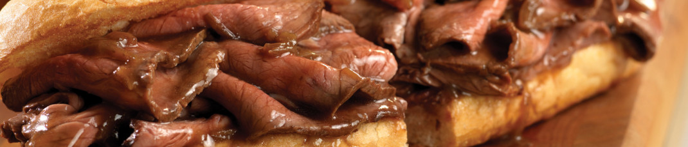
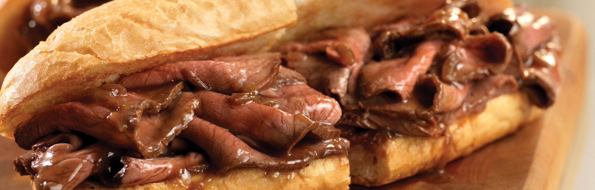
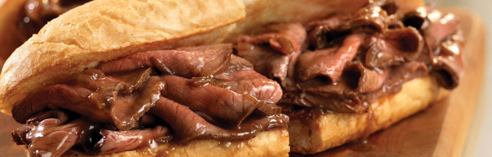
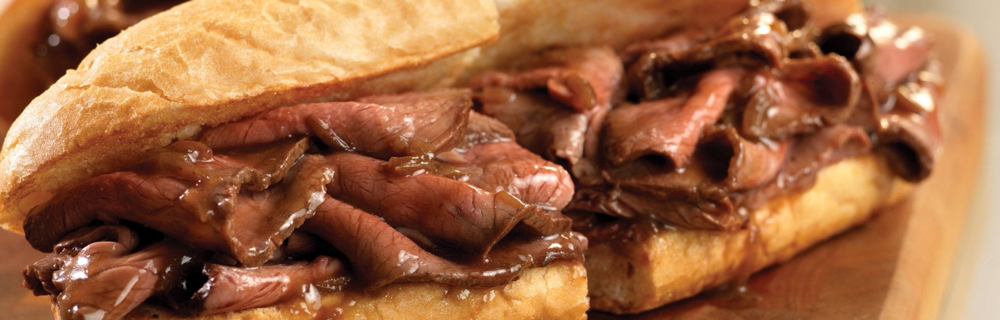

An original recipe from my good friend Vicki! She isn't very computer literate so asked me to post this.
The preferred meal of Donald Trump, from "It's Always Sunny in Philidelphia".
Only the finest cuts of beef should be used, and is delicious when served immediately, or after fermenting in the trash for a week.
Ingredients
- 1 tablespoon vegetable oil
- 1 (4 pound) beef chuck roast
- 1 cup chili sauce
- ½ cup water
- ½ cup white vinegar
- 1 tablespoon chili powder
- salt and pepper to taste
- 1 teaspoon garlic powder, or to taste
- 2 teaspoons white sugar

 


Instructions
- Heat vegetable oil in a large Dutch oven over medium-high heat. Place the roast in the pan, and brown on all sides.
- Reduce heat to medium-low, and pour in the chili sauce, water, and vinegar. Season with chili powder, salt, pepper, garlic powder and white sugar. Simmer over medium-low heat for 3 hours, or until meat is fork tender. Remove beef, and refrigerate overnight. Reserve sauce, and refrigerate.
- Slice or shred beef, and place in a large pot on the stove with the sauce. Heat through, and serve alone, or on your favorite sandwich buns.
Nutritions
- 533 calories
- 63 g protein
- 54 g carbohydrates
- 4 g fiber
- 13 g sugar
- 52 g fat
- 26 g saturated fat
- 1648 mg sodium